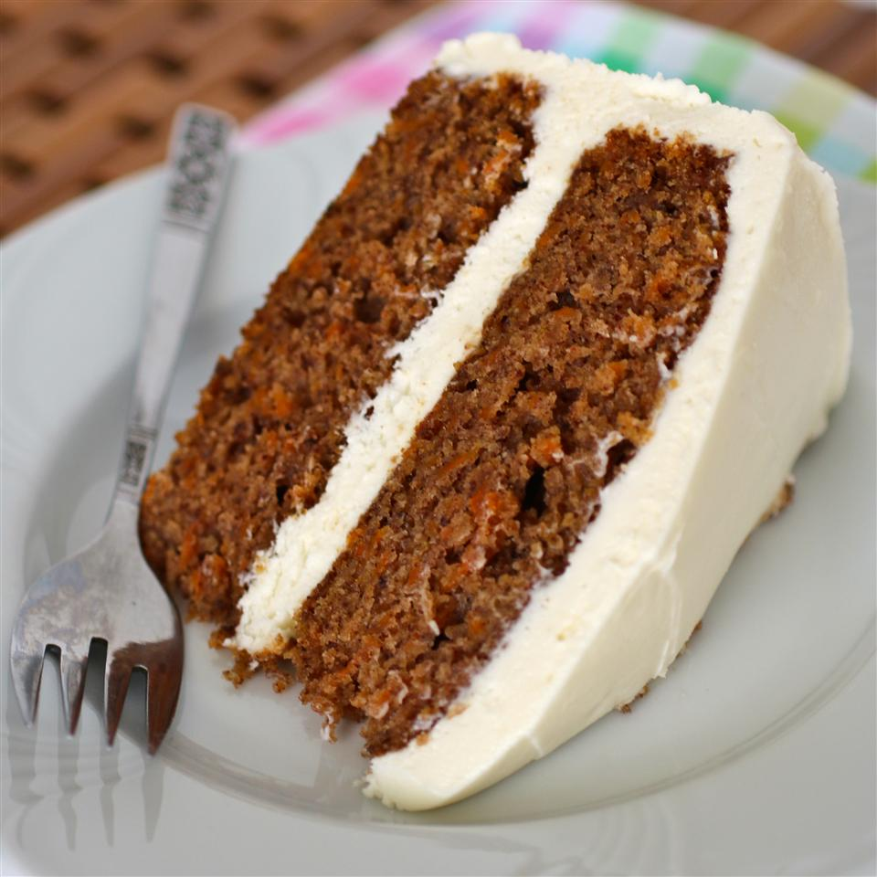

Cream Cheese Frosting
Ingredients
- 2 (8 ounce) packages cream cheese, softened
- ½ cup unsalted butter, softened
- 1 teaspoon vanilla extract
- 2 cups sifted confectioners' sugar
Directions
- Beat cream cheese and softened butter in a medium bowl until smooth and creamy. Mix in vanilla.
- Gradually add sugar, beating after each addition until incorporated. Continue to beat until frosting is very smooth.
- Store in the refrigerator after use.
Tips
- For a chocolate version, add 1/4 to 1/2 cup cocoa, depending on how rich you want it.